By using this concept of multiplication of monomials, let us try to prove the identities geometrically, which are very much useful in solving algebraic problems.
3.3.1 Identity-1: \((x+a)(x+b)=x^{2}+x(a+b)+ab\)
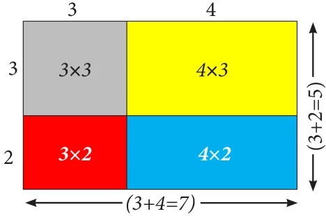
Consider four regions. One region is square shaped with dimension \(3 \times 3\) (Grey). Also, the other three regions are rectangle in shape with dimensions \(4 \times 3\) (yellow), \(3 \times 2\) (red) and \(4 \times 2\) (Blue). Arrange these four regions to form a rectangular shape as shown in the Fig. 3.8.
By observing Fig. 3.8, we can note that,
Area of the bigger rectangle = Area of a square (Grey ) + Area of Three rectangles
\((3+4)(3+2)=(3 \times 3)+(4 \times 3)+(3 \times 2)+(4 \times 2)\)
\((3+4)(3+2)=(3 \times 3)+3 \times (4+2)+(4 \times 2) \quad \ldots(1)\)
Note
We know that,
Area of rectangle \(= \textit{length} \times \textit{breadth}\)
\(= l \times b\)
Also, area of square \(= \textit{side} \times \textit{side}\)
\(= a \times a = a^{2}\)
Where, LHS is \((3+4)(3+2)=7 \times 5=35\)
RHS is \((3 \times 3)+3(4+2)+(4 \times 2)=9+(3 \times 6)+8\)
\(=9+18+8=35\)
Therefore, LHS = RHS. In the similar way as explained above, let us check for another set of four regions as shown in the Fig. 3.9.
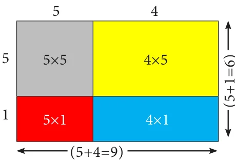
By observing Fig. 3.9, we can note that,
Area of the bigger rectangle = Area of a square (Grey ) + Area of Three rectangles
\((5+4)(5+1) = (5 \times 5) + (5 \times 1) + (5 \times 4) + (1 \times 4)\)
\((5+4)(5+1) = (5 \times 5) + 5(1+4) + (1 \times 4) \quad \ldots(2)\)
Where, LHS is \((5+1)(5+4)=6 \times 9=54\)
RHS is \(5^{2}+5(1+4)+(1 \times 4)=25+(5 \times 5)+4\)
\(=25+25+4=54\)
Therefore, LHS = RHS.
Thus, equation (1) and (2) is true for given set of any three values. By generalising those three values as 'x', 'a' and 'b' we get, \((x+a)(x+b)=(x \times x)+x(a+b)+(a \times b)\)
That is, \((x+a)(x+b)=x^{2}+x(a+b)+ab\)
Hence, \((x+a)(x+b)=x^{2}+x(a+b)+ab\) is an identity. Now, let us prove this identity, geometrically.
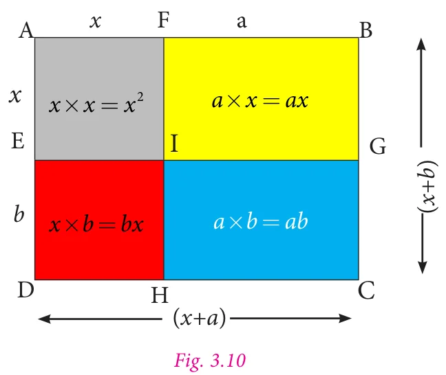
Let one side of a rectangle be \((x+a)\) and the other side be \((x+b)\) units.
Then, the total area of the rectangle ABCD = length \(\times\) breadth \(=(x+a)(x+b) \quad \ldots(3)\)
From the Fig. 3.10, we can see that the
Area of the rectangle ABCD = area of the square AFIE + area of the rectangle FBGI + area of the rectangle EIHD + area of the rectangle IGCH
\(=x^{2}+ax+bx+ab\)
\(=x^{2}+x(a+b)+ab \quad \ldots(4)\)
From (3) and (4) we get, \((x+a)(x+b)=x^{2}+x(a+b)+ab\)
Hence, \((x+a)(x+b)=x^{2}+x(a+b)+ab\) is an identity.
Note
- In case if \(b=-b\) then the identity is \((x+a)(x+(-b))=x^{2}+x(a+(-b))+a(-b)\)
\((x+a)(x-b)=x^{2}+x(a-b)-ab\) - If \(a=-a\) then the identity is \((x+(-a))(x+b)=x^{2}+x((-a)+b)+(-a)b\)
\((x-a)(x+b)=x^{2}+x(b-a)-ab\) - If \(a=-a\) and \(b=-b\) then the identity is
\((x+(-a))(x+(-b))=x^{2}+x((-a)+(-b))+(-a)(-b)\)
\((x-a)(x-b)=x^{2}-x(a+b)+ab\)
Example 3.1 Simplify the following using the identity \((x+a)(x+b)=x^{2}+x(a+b)+ab\) :
(i) \((x+3)(x+5)\) (ii) \((y+6)(y+8)\) (iii) \(43 \text{ x } 36\)
Solution
(i) \((x+3)(x+5)\)
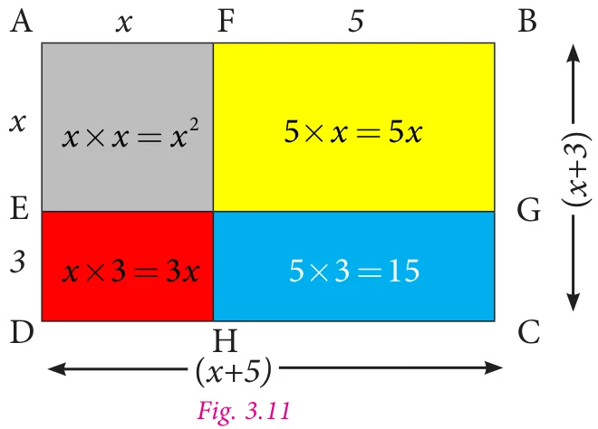
Let us represent the expression geometrically, as shown in the Fig. 3.11.
In the rectangle with length \((x+5)\) and breadth \((x+3)\), we get,
Area of bigger rectangle = Area of a square + Area of three rectangles
Therefore,
\((x+3)(x+5)=x^{2}+5x+3x+15\)
\(=x^{2}+(5+3)x+15\)
\(=x^{2}+8x+15\).
(ii) \((y+6)(y+8)\)
Let us represent the expression geometrically, as shown in Fig. 3.12.
In the rectangle with length \((y+6)\) and breadth \((y+8)\) units, we get,
Area of bigger rectangle = Area of square + Area of three rectangles
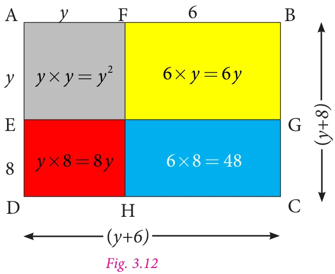
Therefore,
\((y+6)(y+8)=y^{2}+6y+8y+48\)
\((y+6)(y+8)=y^{2}+(6+8)y+48\)
\(=y^{2}+14y+48\)
(iii) \(43 \times 36=(40+3) \times (40-4)\)
We know the identity
\((x+a)(x+b)=x^{2}+x(a+b)+ab\)
Taking, \(x=40\), \(a=3\) and \(b=-4\), we get
\((40+3)(40-4)=40^{2}+40(3-4)+3(-4)\)
\(=1600+40(-1)-12\)
\(=1600-40-12\)
\(=1600-52\)
Therefore, \(43 \times 36=1548\).
3.3.2 Identity-2: \((a+b)^{2}=a^{2}+2ab+b^{2}\)
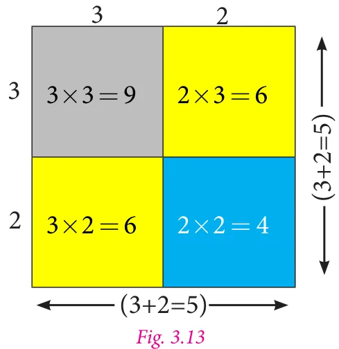
Consider four regions. Two square shaped regions with the dimensions of \(3 \times 3\) (Grey) and \(2 \times 2\) (Blue). Also, there are two rectangle shaped regions and both are in the dimension of \(3 \times 2\) (yellow).
Arrange them in a square shape as shown in the Fig. 3.13.
By observing the Fig. 3.13, we can note that
Area of the bigger square = Area of two small squares + Area of two rectangles.
\((3+2)^{2}=3^{2}+(2 \times 3)+(3 \times 2)+2^{2}=3^{2}+(3 \times 2)+(3 \times 2)+2^{2}\) [since, \(2 \times 3=3 \times 2\)]
Therefore, \((3+2)^{2}=3^{2}+2 \times (3 \times 2)+2^{2}\)
where, L.H.S is \((3+2)^{2}=5^{2}=25 \quad \ldots(1)\)
R.H.S is \(3^{2}+2 \times (3 \times 2)+2^{2}=9+12+4=25. \quad \ldots(2)\)
From (1) and (2), L.H.S = R.H.S.
Now, we can prove this for the variables \(a\) and \(b\).
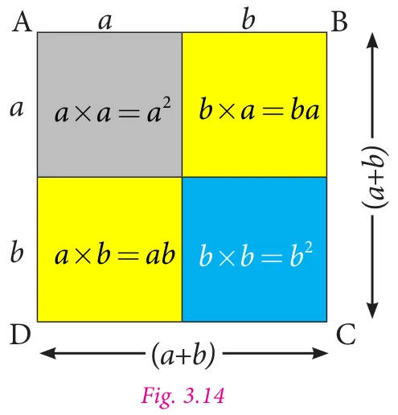
Let us take a square ABCD of side \((a+b)\), hence its area is \((a+b)(a+b)=(a+b)^{2}\)
By observing the Fig. 3.14,
Area of the bigger square ABCD = Area of two small squares (Grey and blue) + Area of two rectangles (yellow).
So, \((a+b)^{2}=a^{2}+ba+ab+b^{2}\)
\(=a^{2}+ab+ab+b^{2}\) (since, \(ba=ab\))
\((a+b)^{2}=a^{2}+2ab+b^{2}\)
Hence proved.
Note
If, we substitute \(b=a\) in the identity \((x+a)(x+b)=x^{2}+x(a+b)+ab\), we get,
\((x+a)(x+a)=x^{2}+x(a+a)+a \times a\)
\((x+a)^{2}=x^{2}+x(2a)+a^{2}\)
\((x+a)^{2}=x^{2}+2ax+a^{2}\), which is similar to the identity \((a+b)^{2}=a^{2}+2ab+b^{2}\).
Example 3.2 Simplify the following using the identity \((a+b)^{2}=a^{2}+2ab+b^{2}\).
(i) \((2x+5)^{2}\) (ii) \(21^{2}\)
Solution
(i) \((2x+5)^{2}\)
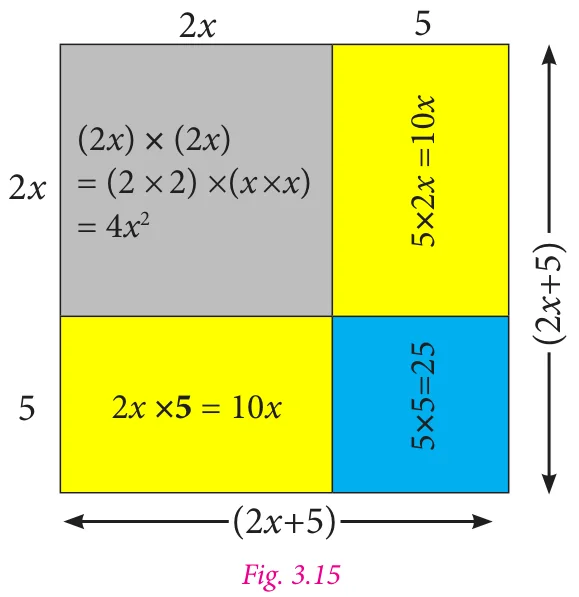
Let the side of the square be \(2x+5\) units.
Then its area is side \(\times\) side, that is \((2x+5)^{2}\).
The geometrical representation of the given expression is as shown in Fig. 3.15.
Area of the bigger square = Area of two squares + Area of two rectangles.
\((2x+5)^{2}=4x^{2}+25+10x+10x\)
\(=4x^{2}+(10+10)x+25\) (Adding like terms)
\(=4x^{2}+20x+25\).
(ii) \(21^{2}\)
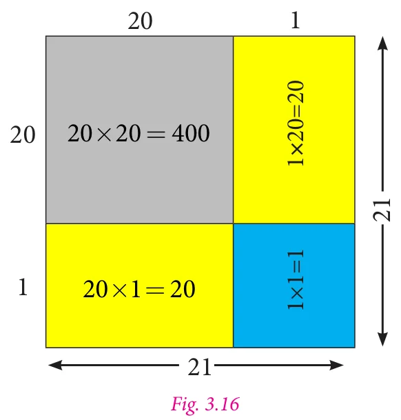
Let the side of the square be 21. Hence, its area is \(21^{2}\).
Consider \(21^{2}\) as \((20+1)^{2}\) which is one of the way to represent it geometrically as shown in Fig. 3.16.
Now,
Area of the bigger square = Area of two squares + Area of two rectangles.
\(21^{2}=400+1+20+20=441\).
Aliter method:
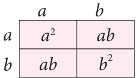
We know the identity, \((a+b)^{2}=(a+b)(a+b)\)
\(=a^{2}+2ab+b^{2}\)
To find the value of \(21^{2}\),
We take, \(21^{2} = (20+1)^{2}\)
\(= (20+1)(20+1)\)
Here, \(a = 20\) and \(b = 1\). Therefore,
\(a^2 + 2ab + b^2 = 20^2 + 2 \times 20 \times 1 + 1^2\)
\(= 400+40+1 = 441\).
3.3.3 Identity-3: \((a - b)^2 = a^2 - 2ab + b^2\)
When we replace 'b' by '\(-b\)' in 'identity-2', we get a new identity.
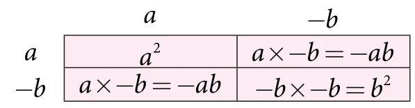
We know that, \((a + b)^2 = a^2 + 2ab + b^2\)
Taking 'b' as '\(-b\)' in 'identity-2', we get,
\([a + (-b)]^2 = a^2 + 2a(-b) + (-b)^2\)
\((a - b)^2 = a^2 - 2ab + (-b)(-b)\)
Therefore, \((a - b)^2 = a^2 - 2ab + b^2\)
Note that, when we change the sign of b, the sign of 2ab (second term) alone is changed.
Example 3.3 Using the identity \((a - b)^2 = a^2 - 2ab + b^2\), simplify the following:
(i) \((3x-5y)^{2}\) (ii) \(47^{2}\)
Solution
(i) \((3x-5y)^{2}\)
Put \(a=3x\) and \(b=5y\) in the identity \((a-b)^{2}=a^{2}-2ab+b^{2}\), we get,
\((3x-5y)^{2}=(3x)^{2}-2 \times (3x) \times (5y)+(5y)^{2}\)
\(=3^{2} \times x^{2}-(2 \times 3 \times 5)xy+(5^{2} \times y^{2})\)
\(=9x^{2}-30xy+25y^{2}\).
(ii) \(47^{2}=(50-3)^{2}\), substituting \(a=50\) and \(b=3\) in the identity \((a-b)^{2}=a^{2}-2ab+b^{2}\), we get,
\((50-3)^{2}=50^{2}-2 \times 50 \times 3+3^{2}\)
\(=2500-300+9\)
\(=2509-300=2209\).
3.3.4 Identity-4: \((a+b)(a-b)=a^{2}-b^{2}\)
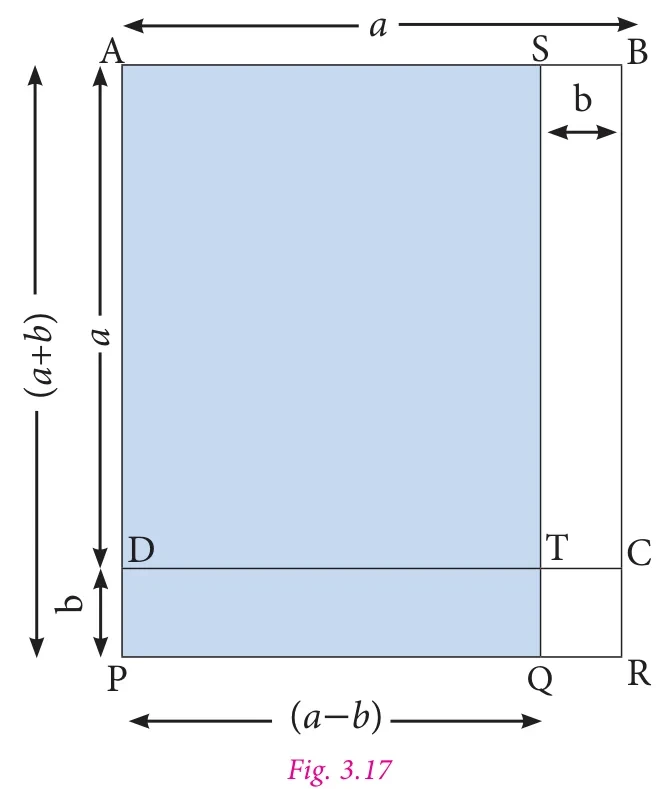
In the given figure, \(AB=AD=a\).
So, area of square \(ABCD=a^{2}\).
Also, \(SB=DP=b\).
Area of the rectangle \(SBCT=ab\).
Similarly, area of the rectangle \(DPRC=ab\).
Also, area of the square \(TQRC=b^{2}\).
Area of the rectangle \(DPQT=ab-b^{2}\).
Now, \(AS=PQ=(a-b)\) and \(AP=SQ=(a+b)\).
Hence, area of the rectangle APQS (the shaded rectangle) = area of square ABCD − area of rectangle STCB + area of rectangle DPQT
\(=a^{2}-ab+(ab-b^{2})\)
\(=a^{2}-ab+ab-b^{2}\)
\(=a^{2}-b^{2}\)
Hence, \((a+b)(a-b)=a^{2}-b^{2}\)
Example 3.4 Simplify by using the identity \((a+b)(a-b)=a^{2}-b^{2}\).
(i) \((3x+4)(3x-4)\) (ii) \(53 \times 47\).
Solution
(i) \((3x+4)(3x-4)\)
Substitute, \(a=3x\) and \(b=4\) in the identity \((a+b) \times (a-b)=a^{2}-b^{2}\), we get,
\((3x+4)(3x-4)=(3x)^{2}-4^{2}\)
\((3^{2} \times x^{2})-16=9x^{2}-16\).
(ii) \(53 \times 47=(50+3) \times (50-3)\).
Take, \(a=50\) and \(b=3\),
Substituting the values of 'a' and 'b' in the identity \((a+b)(a-b)=a^{2}-b^{2}\)), we get,
\(=50^{2}-3^{2}\)
\(=2500-9\)
\(=2491\).
Try this
Consider a square shaped paddy field with side of 48 m. A pathway with uniform breadth is surrounded the square field and the length of the outer side is 52 m. Can you find the area of the pathway by using identities?